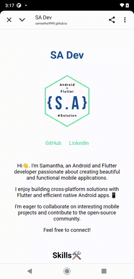

SA Dev

Hi👋, I'm Samantha, an Android and Flutter developer.
I'm dedicated to creating practical mobile applications that positively impact users' lives.
My passion lies in designing functional, easy-to-use apps with intuitive UX/UI to improve everyday experiences.
I specialize in building efficient native Android apps and cross-platform solutions with Flutter.
I'm committed to app optimization, ongoing maintenance, and continuous updates for long-term usability and performance.
I'm eager to collaborate on interesting mobile projects and contribute to the open-source community.
Feel free to connect! I'm always open to exploring innovative solutions in mobile development.
Skills🛠
- Languages: Dart, Kotlin, Java
- Frameworks/Libraries: Flutter, Android SDK, Jetpack, Compose layout, Firebase
- Tools: Android Studio, VS Code, Git, Gradle
TaskMind🎯 - My New Side Project!
[Alpha Test Date - 2025/9/20]
Download APK (Alpha Test Version v1.00(2))
Google Play Store (In Alpha test progress, Only for tester)
I'm excited to share my latest project: TaskMind! 🎉
TaskMind is a clean and intuitive task management application
built with modern Android technologies to help you easily manage
your daily tasks and boost productivity.
It's designed for simplicity and ease of use, allowing you to quickly organize your life.
Key Features:
- Task Management: Add, edit, and delete tasks to stay on top of your progress.
- Task Completion: Easily mark tasks as complete with a simple tap.
- Notification Settings: Set reminders for important tasks and never miss a deadline.
- Search Functionality: Quickly search for tasks to save time.
- Unlimited Tasks: Add unlimited tasks to meet all your needs.
- Dark Mode: Enjoy a comfortable dark mode for improved readability and eye strain reduction.
- Multi-Language Support: Supports both Traditional Chinese and English.
Technologies Used:
- Kotlin: Primary programming language.
- Compose Layout: Modern declarative UI toolkit for building native Android Material Design UIs.
- MVVM Architecture: Clean architecture for separation of concerns, testability, and maintainability.
- Room Local Database Library: For local data storage and management.
- Hilt Dependency Injection: For managing dependencies and improving code testability.
Developer Soul🧠
[Release Date - 2025/5/20]
I'm excited to share my latest project: Developer Soul! 🎉.
A simple yet engaging Flutter quiz application designed
to test your knowledge and determine your programmer soul type.
Featuring a clean UI with a start screen,
question screen, and personalized results,
Developer Soul is a fun way to explore coding personalities.
This project showcases Flutter's capabilities
for creating interactive and cross-platform experiences.
Features:
- Interactive Quiz: Engaging quiz format with multiple-choice questions.
- Dynamic UI: Utilizes Flutter's widgets to create a responsive and visually appealing interface.
- Personalized Results: Provides a unique "programmer soul type" based on the quiz results.
- About Page: Includes an "About the developer" section accessible via a popup menu.
- Cross-Platform: Runs on Android, iOS, and Web.
Technologies Used:
- Flutter: UI framework.
Listen First🎶
[Release Date - 2025/5/9]
I'm excited to announce the recent release of Listen First 🥳.
A cross-platform music search and preview app built with Flutter.
Search the iTunes API, listen to previews,
and enjoy a consistent experience on Android, iOS, and web!
It's open source and available on GitHub and
you can also check out the web version!

Features:
- Search Music: Search for songs, artists, and albums on the iTunes Store.
- Play Previews: Listen to previews of the search results.
- Search History: View and manage your search history.
- Localization: Supports multiple languages (English and Chinese).
- Cross-Platform: Runs on Android, iOS, and Web.
Technologies Used:
- Flutter: UI framework.
- GetX: State management and dependency injection.
- EasyLocalization: Internationalization and localization.
- Hive: Local data storage for search history.
- Just Audio: Audio playback.
- Logger: Logging.